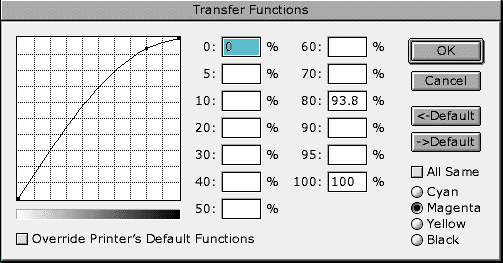

The Transfer Functions dialog is where you can control how much of each primary color of toner (cyan, magenta, yellow, or black) gets used, allowing you to compensate for the printer's individual characteristics.
The left side of the graph represents the amount of toner at low levels, the right side at high levels. If, for instance, you noticed that something purple was looking somewhat washed-out, you might increase the level of magenta as shown above. For a good idea of what components will affect which color, experiment with the saturation controls in Images -> Adjust -> Hue/Saturation.
This dialog is accessed by going to File -> Page Setup -> Adobe Photoshop -> Transfer.
Entire article and photographs copyright © 1998 Dan Wilga. All rights reserved. May not be reprinted without permission.